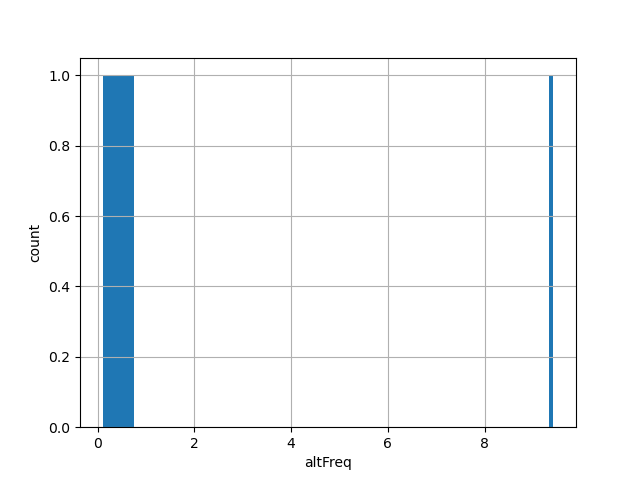

| Id: | hg38/TESTFreq |
| Type: | allele_score |
| Summary: | N/A |
| Description: | N/A |
| Labels: |
| id | type | default annotation | description | histogram | range |
|---|---|---|---|---|---|
| altFreq | float |
alt_freq |
 | (0.100, 9.423) | |
| altFreq2 | float |
alt_freq2 |
(0.800, 10.435) |
| Filename | Size | md5 |
|---|---|---|
| TESTFreq.tsv.gz | 206.0 B | 5220b08aa6081a753955e8b5cdf3566c |
| TESTFreq.tsv.gz.tbi | 100.0 B | 05e5bc2e111692d73e2c27e76fc7e2a7 |
| genomic_resource.yaml | 544.0 B | 5057dfbead3499d29983468e36735f88 |